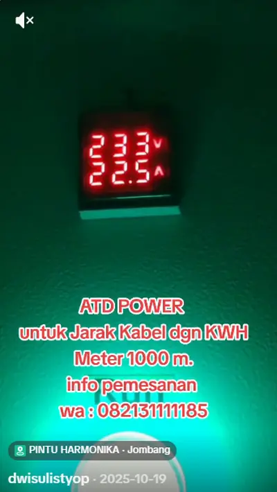
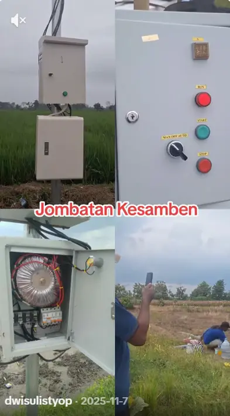
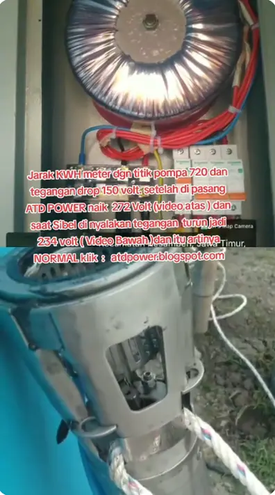
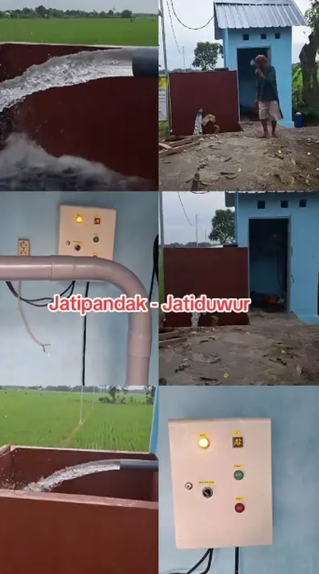
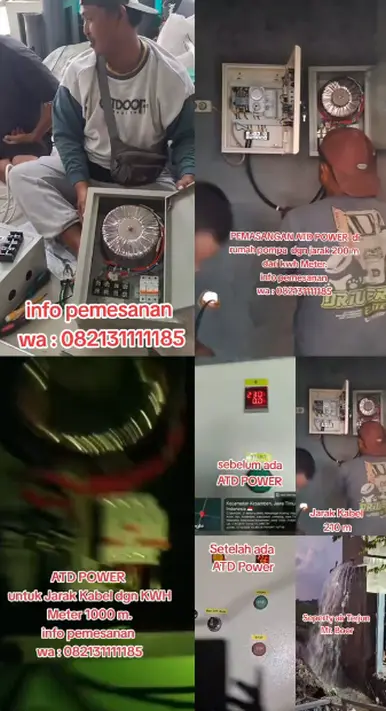
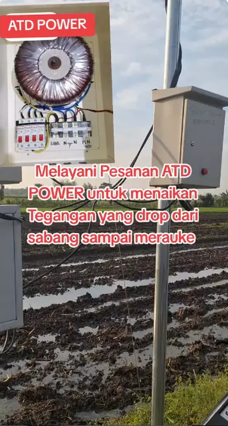
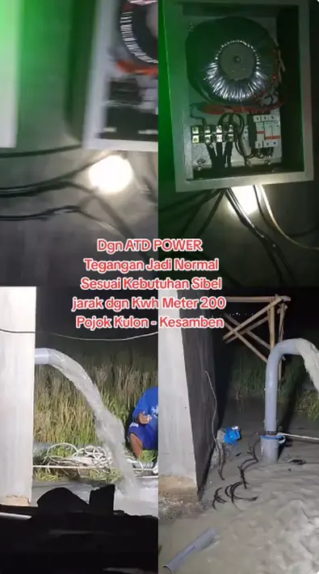
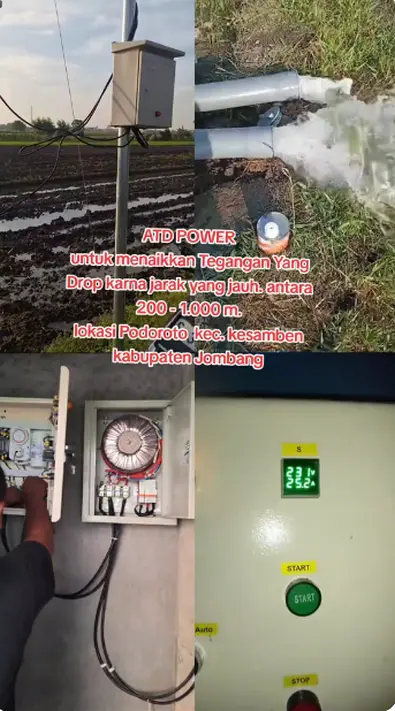
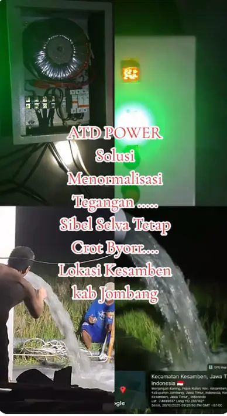
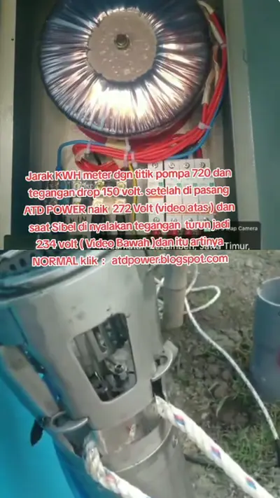

Bukti Nyata! 16 Pemasangan Sukses ATD Power di Pelosok Jatim
Masih ragu? Silakan pelototi sendiri dokumentasi asli tim kami di lapangan. Dari area persawahan Nganjuk hingga tambak di Mojokerto, semuanya sukses kembali ke 220V stabil!


Jangan biarkan dinamo gosong gara-gara listrik cuma 125V. Kami pabrikasi panel sibel & alat penaik tegangan spesialis jarak ekstrem 200m - 1000m. Arus dijamin kembali 220V+ tanpa rewel.
Konsultasi Drop Tegangan via WhatsApp Sekarang! ➔Bayangkan Anda sedang butuh air cepat untuk sawah atau tambak, tapi mesin mendadak mati total. Nggak lucu kan kalau harus repot gulung ulang dinamo yang harganya bikin kantong jebol?
Mayoritas orang langsung menyalahkan merek pompanya. Padahal, biang kerok aslinya adalah tegangan listrik dari PLN yang susut drastis di ujung kabel panjang.
Jangan tunggu sampai mesin overheat dan operasional tambak Anda lumpuh. Anda butuh intervensi teknis yang pasti-pasti saja, bukan sekadar alat penghemat listrik abal-abal.
Dirancang khusus untuk mengamankan tarikan kabel 200 meter hingga 1000 meter dari KWh meter.
Perakitan kustom 1 Phase 5500 Watt untuk 2-4 HP. Dilengkapi timer presisi agar mesin tidak dipaksa kerja rodi.
Diproduksi mandiri di workshop Mojoagung, Jombang. Kualitas kontrol ketat, harga tanpa mark-up tengkulak.
Tonton langsung bukti lapangan bagaimana kami mengembalikan tegangan dari 150V menjadi 234V stabil.










Masih ragu? Silakan pelototi sendiri dokumentasi asli tim kami di lapangan. Dari area persawahan Nganjuk hingga tambak di Mojokerto, semuanya sukses kembali ke 220V stabil!
Setiap jam Anda menunda, risiko dinamo terbakar semakin besar. Bukti sudah terpampang nyata! Konsultasikan jarak kabel Anda kepada ahlinya hari ini juga.
Chat Tukang Rakit Sekarang - Fast Respons!